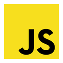
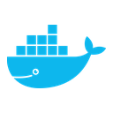

Visão sistêmica
Quando análise de impacto virou parte central do meu jeito de testar
Hoje trabalho em um ERP web com regras de negócio e fluxos que se conectam o tempo todo. Participo de refinamentos com Produto e Desenvolvimento, questiono cenários antes da implementação e acompanho as entregas até a homologação.
- Mapeio riscos e efeitos colaterais entre telas, módulos e fluxos relacionados.
- Crio cenários positivos, negativos e regressivos a partir de critérios de aceite e regras condicionais.
- Uso API e automação como apoio à validação funcional quando elas agregam profundidade ao teste.
Hard skills
Postman
Cypress

JavaScript Jira Azure DevOps
Docker